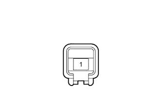

PARKING ASSIST MONITOR SYSTEM > Message indicating Back Door is Open is Displayed even after Back Door is Closed |
| 1.READ VALUE USING INTELLIGENT TESTER (BACK DOOR COURTESY SWITCH) |
Connect the intelligent tester to the DLC3.
Turn the engine switch on (IG).
Turn the intelligent tester on.
Enter the following menus: Body / Main Body / Data List.
Check the Data List for proper functioning of the following item.
| Tester Display | Measurement Item/Range | Normal Condition | Diagnostic Note |
| Back Door Courtesy SW | Back door courtesy switch signal/ON or OFF | ON: Back door open OFF: Back door closed | - |
|
| ||||
| OK | ||
| ||
| 2.CHECK HARNESS AND CONNECTOR (MAIN BODY ECU - BACK DOOR COURTESY LIGHT SWITCH) |
Disconnect the G47 main body ECU connector.
Disconnect the R11 back door courtesy light switch assembly connector.
Measure the resistance according to the value(s) in the table below.
| Tester Connection | Condition | Specified Condition |
| G47-19 (BCTY) - R11-1 | Always | Below 1 Ω |
| G47-19 (BCTY) - Body ground | Always | 10 kΩ or higher |
|
| ||||
| OK | |
| 3.INSPECT BACK DOOR COURTESY LIGHT SWITCH ASSEMBLY |
|  |
Remove the back door courtesy light switch assembly (Click here).
Measure the resistance according to the value(s) in the table below.
| Tester Connection | Switch Condition | Specified Condition |
| 1 - Switch body | Pin pushed | 10 kΩ or higher |
| Pin not pushed | Below 1 Ω |
|
| ||||
| OK | ||
| ||